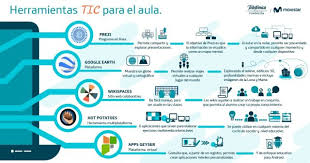

Herramientas y tecnologías de la creación digital:
Software de diseño gráfico:
Adobe Photoshop: Ampliamente utilizado para la edición y manipulación de imágenes digitales, así como para el diseño gráfico.
Adobe Illustrator: Especializado en la creación de gráficos vectoriales, como logotipos, ilustraciones y diseños de impresión.
CorelDRAW: Otra herramienta popular para el diseño gráfico y la ilustración, que ofrece una amplia gama de herramientas y funciones.
Software de edición de vídeo:
Adobe Premiere Pro: Una de las aplicaciones líderes en edición de vídeo, utilizada para crear películas, videos comerciales, contenido para redes sociales, entre otros.
Final Cut Pro: Una opción popular entre los profesionales de la edición de vídeo en el ecosistema de Apple, conocida por su rendimiento y flujo de trabajo intuitivo.
DaVinci Resolve: Ofrece una combinación de edición de vídeo, corrección de color, efectos visuales y postproducción de audio en una sola aplicación.
Software de animación:
Adobe Animate: Anteriormente conocido como Flash, es utilizado para crear animaciones interactivas, banners web, juegos y contenido multimedia.
Toon Boom Harmony: Ampliamente utilizado en la industria de la animación para la producción de series de televisión, películas y contenido web.
Blender: Una herramienta de código abierto que ofrece capacidades de modelado, animación, renderizado y composición 3D.
Software de modelado 3D:
Autodesk Maya: Utilizado en la industria del cine, videojuegos y efectos visuales para crear modelos 3D, animaciones y efectos especiales.
Cinema 4D: Reconocido por su facilidad de uso y versatilidad, es utilizado para el modelado, animación y renderizado de objetos 3D.
SketchUp: Ideal para la creación de modelos arquitectónicos y de diseño, así como para la visualización 3D en diversos proyectos.
Plataformas de diseño y colaboración:
Adobe Creative Cloud: Ofrece una suite completa de aplicaciones creativas, incluyendo Photoshop, Illustrator, Premiere Pro, entre otros, además de servicios de colaboración en la nube.
Figma: Una plataforma de diseño colaborativo basada en la web, utilizada para crear prototipos de diseño de interfaces de usuario y colaborar en tiempo real.
Canva: Orientada a usuarios no especializados en diseño, ofrece una amplia variedad de plantillas y herramientas para la creación de diseños gráficos, presentaciones y materiales de marketing.
Estas son solo algunas de las herramientas y tecnologías utilizadas en la creatividad digital. La elección de las herramientas dependerá del tipo de proyecto, las preferencias del usuario y el nivel de experiencia en el uso de software específico.
